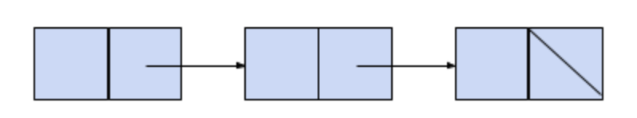
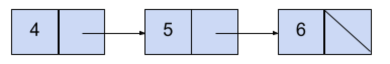
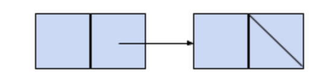
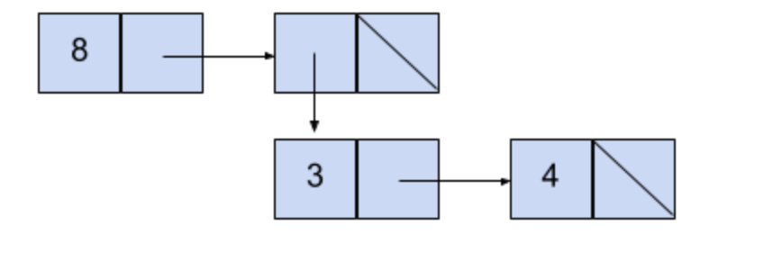
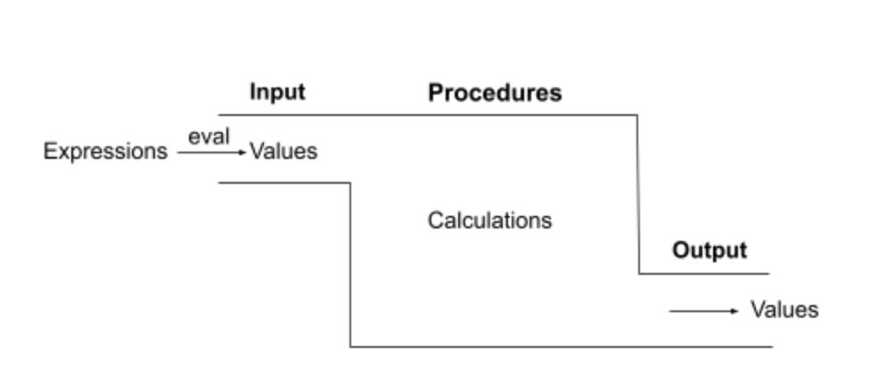
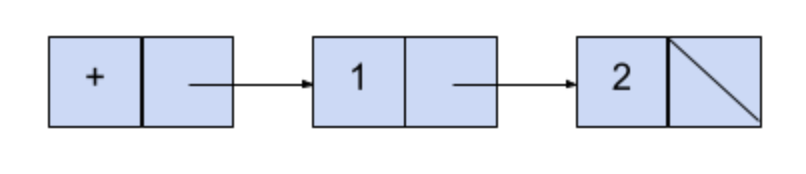
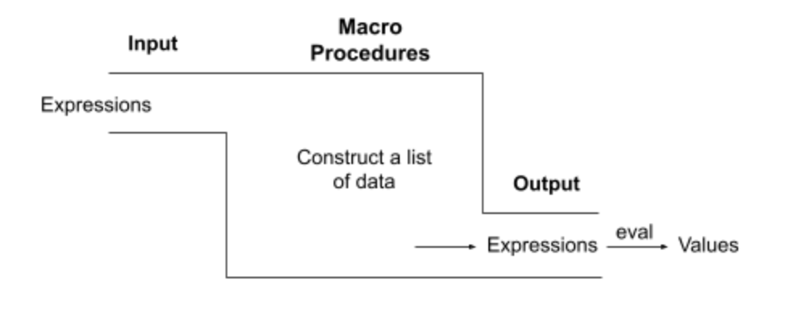

Study Guide: Macros
Instructions
Macro Procedures
Adapted from Rachel's full Macro Procedures study guide, which can be found here.
Objectives: Understand what it means to treat an expression as data, the differences compared to regular Scheme procedures, and strategies for writing macro procedures.
List Construction
To get started, we'll review a few ways of constructing lists in Scheme. These aren't all the ways to create lists in Scheme.
Using list
When drawing a box and pointer diagram for a list expression, the first step is to count the number of elements being passed in. This will tell us how many pairs will be included in our diagram. We’ll use an example to demonstrate this: (list 4 5 6)
We’ve passed in three elements to list, so we’ll start off by drawing three connected pairs with nil at the end:

At this point, we can fill in the specified values in the three open spots: 
What if our list was a bit more complex? (list 8 (list 3 4))
Since there are two elements being passed in, we’ll draw two connected pairs:

There were two elements passed into list: 8 and another list. As 8 was the first element, we place it in the first spot. We use a pointer to the list containing 3 and 4 in the second spot to represent the nested list as our second element.

Using quote
We can also create lists with single quotes! Remember that single quotes return everything to the right of the quote, unevaluated. For example:
scm> ‘(1 2 3)
(1 2 3)Using quasiquote and unquote
Quasiquotes (backtick symbol `) work very similarly to quotes. The key difference is that they give us the ability to use unquotes (comma symbol ,). When we place a quasiquote outside an expression, we still get a list of all the elements, though any elements that are unquoted are evaluated. For example:
scm> (define x 6)
x
scm> (define y 1)
y
scm> `(,x ,y a)
(6 1 a)Input and Output
Using the regular Scheme procedures we’ve seen so far, we could always say that (foo 15) was equivalent to (foo (* 3 5)). Why is this? Well, to evaluate any call expression to a regular Scheme procedure, we have the following set of rules:
- Evaluate operator to a regular procedure
- Evaluate operand expressions
- Apply the procedure to evaluated operand(s)
For the first call expression, to evaluate it we would evaluate the foo function, evaluate 15 to the value 15, and then apply foo to 15. For the second expression, we would evaluate the foo function, evaluate (* 3 5) to the value 15, and then apply foo to 15. The key takeaway here is that for regular Scheme procedures, our operands are always evaluated to values. Since during the apply step the body of the procedure is evaluated as well, the output of our procedure will always be a value as well. We can visualize this with the following diagram:

The body of our procedure can do whatever we like--most of the time it’s some sort of calculation--though what’s important is that our procedures take values as input, do some work, and return values as output.
Up until now, we’ve treated values as data. We could manipulate those values, use them to calculate things, or whatever we like. Expressions are automatically evaluated in Scheme, so in order to work with the expressions themselves (instead of what they evaluate to) we need to halt this evaluation and store the expression itself as data. Since everything in Scheme besides primitives are lists, we can store those expressions as lists. Meaning, the expression (+ 1 2) is stored like the following: 
Now we’ll take a look at macro procedures! Instead of the rules of evaluating call expression for regular procedures as seen above, we’ll use the following rules:
- Evaluate operator to a macro procedure
- Apply macro procedure to the operand expressions
- Evaluate the expression returned by the macro procedure in the frame it was called in
We can visualize this with the following diagram: 
Macro procedures take expressions as input, similar to the regular procedures, although the key difference is they are not evaluated before running the body of the procedure. When we write macro procedures, instead of thinking “what should the behavior of my procedure be?” think “how do I construct a list that represents the behavior of my procedure?”.
What we can do with Macros
The only reason the special forms in Scheme are special is because they all have unique evaluation rules. For example, if we tried to call if as a procedure, we’d end up evaluating if as the operator, we’d evaluate the if-true and if-false expressions as the operands, and then apply the function to the operands. Doing this causes us to lose the invariants that define if statements because we only want at most one of the clauses to be evaluated, never both of them at the same time.
With macros, we can take advantage of the fact that none of the operands get evaluated when it’s called and create our own unique evaluation rules. We can control which operand expressions are evaluated and when, which means we can even design our own special forms! We’ll walk through a few examples on how to do exactly this in the next section.
Approaching Macro Procedures
Before we get started, here’s a rough outline on the steps to writing a macro procedure:
- Take the data that you’re given (could be lists, or other expressions) and draw out the box and pointer diagram to represent it if applicable.
- Write the Scheme code that accomplishes what the procedure should do
- Use the body of the macro procedure to construct that code in a list. It represents the code that’ll eventually be evaluated.
Practice Problems
Q1: Make And
Implement make-and, a macro procedure that behaves like our and special form and accepts two arguments, returning either the first false-y value or the last truth-y value.
make-and should have the following functionality (it should short-circuit!):
scm> (make-and 4 5)
5
scm> (make-and #f (/ 1 0))
#f(define-macro (make-and arg1 arg2)
'YOUR-CODE-HERE
`(and ,arg1 ,arg2))Q2: Cond False
Implement cond-false, which works similarly to the built-in special form cond, though instead will evaluate only the second sub-expression of the first falsey condition (whereas cond evaluates the second sub-expression to the first truthy condition). Our input will also be a list of clauses instead of a variable number of clauses, to make the problem a bit easier. Feel free to define any helper functions or use any built-ins necessary. Here are a few examples of how cond-false should function:
scm> (cond-false ( ((= 1 2) (* 3 4))
((= 3 3) (* 8 9)) )
)
12
scm> (cond-false ( ((= 5 5) (print 5))
((even? 7) (print 7)) )
)
7
scm> (cond-false ( (#f ‘sun)
((/ 1 0) ‘moon) )
)
sun'YOUR-CODE-HERE
; write any helpers you need here
(define (convert-false c)
(if (null? lst) nil
(cons (list 'eq? #f (car c)) (convert-false (cdr c)))
)
)
(define-macro (cond-false clauses)
'YOUR-CODE-HERE
(cons
'cond
(zip (convert-false (map car clauses)) (map cadr clauses))
))